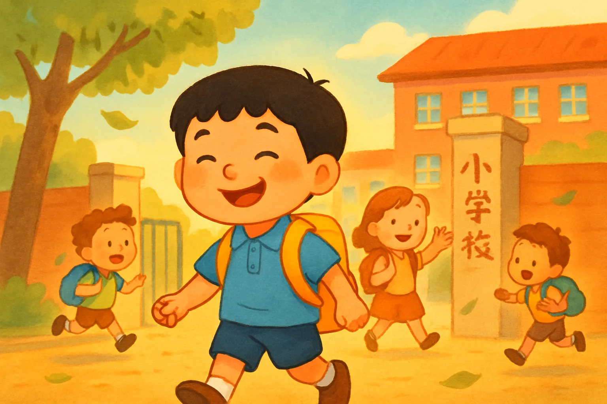
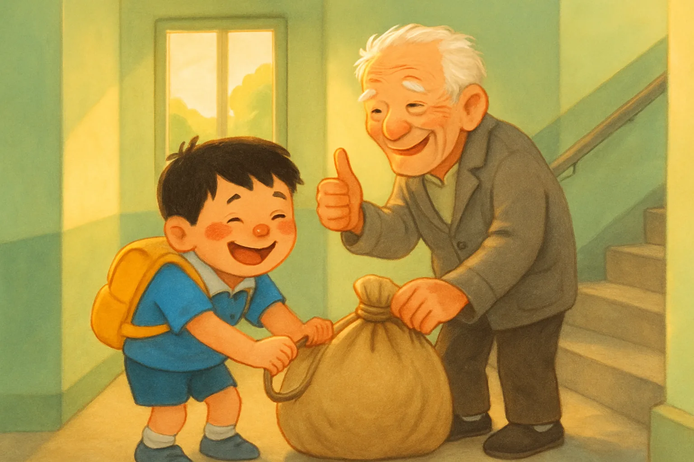

小明帮助别人

“ 铃。。。。。。铃。“ 铃放学铃声响了，同学 们背着书包，踏着轻快的脚步 向学校门口走去。 一天，小明放学后连忙回到家。到了家，他正要去打电梯 到上楼去。 这时他看到了楼梯，就发闪光掌了，然后他要用楼梯。
后来，他看到了一个老爷爷 。那个老爷爷的头发花白，满脸皱纹，有点驼背。 他正在从楼梯去前面 。小明看到他在背着一个非常重的东西。然后他心想，我应该帮他，因为他看起来非常累。而且他年纪大了，很需要帮助。
后来，他就高兴地对老爷爷说：“老爷爷，我可以帮你把那个东西拉上来。”老爷爷听了，开心地说：“好。” 小明就开始把那个非常重的东西拉了上来。他知道这是非常累的，他就心想，我不应该把那个东西弄坏，要不然里面的东西也可能坏掉。

到了老爷爷要去的楼层，他就把那个非常重的东西给了老爷爷。老爷爷竖起大拇指，称赞他是个好孩子。他听了爷爷的称赞，心里好像吃了蜜糖一样甜。 他是非常累的， 也满头大汗，但是他是很开心的， 因为他帮助了别人。
The End